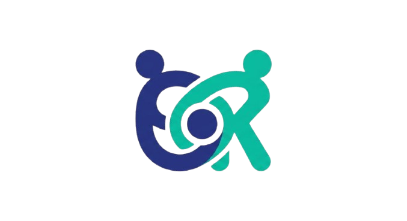

Share-k · Phase 2 · Visual direction validation — concept, sample data, not production UI
Direction A — Registry · السجل
Share-k as a system of record for developer capability. Warm paper, disciplined type, hairline rules. Color is rationed: the deep verification green appears almost only where something has been earned — so a green check means something.
Brand
The existing logo is preserved untouched, placed on the paper field on generous whitespace — never recolored, boxed, or redrawn. The wordmark sets in the UI face; the Arabic name accompanies it only at brand moments (DEC-008).

Share-kشارك
Primary brand expression
Typographic. The hero is a large, quiet headline over paper; the only “rich” object on a page is a real product artifact (a skill ledger, an evidence excerpt). No decorative illustration, no background effects.
Background treatment
Flat warm paper #FAF8F4, structured by hairline rules. Section breaks are ruled lines, like a registry book. Dark mode: warm charcoal with the same accent logic.
Note: the logo’s indigo + teal sit comfortably on paper; the UI accent green is deliberately distinct from the logo teal so “verified” never reads as decoration.
Foundations
One neutral field, one earned accent, three semantic hues that follow the shared status-chip grammar (state-model §6): amber = needs your action · blue = waiting · green = positive terminal · terracotta = negative terminal · violet = AI processing.
paper · #FAF8F4 app field
ink · #1C1B18 text / primary btn
ink-2 · #57534A secondary text
rule · #E3DED2 hairlines, borders
verify · #1E6B4F verified / success — rationed
attention · #9A5B00 needs your action
negative · #A8402F terminal negative
ai · #5B4B8A AI processing only
Display · IBM Plex Sans 600
Verified skills, not claimed ones.
مهارات موثقة، لا مجرد ادعاءات
One superfamily (IBM Plex Sans + IBM Plex Sans Arabic) — both scripts share weight, rhythm, and tone. Arabic is set at +1–2px equivalents for parity.
Body · IBM Plex Sans 400 · Evidence · IBM Plex Mono
Your profile is generated from public GitHub activity, then reviewed by a human before it counts. Every AI decision carries its reason and its sources.
repo: dashboard-ui · 34 commits · confidence: high
Mono is reserved for artifacts — repo names, commits, counts, confidence — never body copy. Spacing: 4px base grid, generous 24/32/48 section steps. Radius: 4–6px. Shadows: none at rest; hover raises via border + 1px translate.
UI components
The same component sample set is rendered in all three directions for a fair comparison.
Buttons
Primary is ink, not green — green is reserved for verification so it can’t be spent on every CTA.
Search input
🔍 Try “realtime chat in Go” — search understands meaning
Select / filter control
Sort Newest first ▾
Tags & badges
ReactTypeScript ✓✓ Verified
BeginnerIntermediateAdvanced
Project card
sharek-backendIntermediateWeb
NestJS API powering Share-k’s collaboration platform — auth, matching, and delivery workflows.
TypeScript 78%★ 2143 open tasks@karim
Featured project card — “certified entry” edge
Featured · Active this week
arabic-nlp-toolkitAdvancedAI/ML
Tokenization, diacritic restoration, and NER for Arabic text.
Python 91%★ 1.2k2 open tasks@nour-ml
Match indicator — explains fit, never a bare score (DEC-010)
Strong matchconfidence · high
✓ Strong React evidence — 3 verified repos
✓ Intermediate TypeScript, verified
◐ Previous testing contributions
○ Docker experience not yet verified
Based on your verified skills only — eligibility is checked per task when you apply.
Status banner · Verified stamp · Empty state
⏳ Your skill profile is in review. Most profile reviews are completed within 48 hours — we’ll notify you. You can explore projects meanwhile.
✓“Approved” stamp — scale-settle 320 ms, once
Nothing matches React + Beginner + AI/MLTry removing a filter — Beginner AI/ML projects are rare.
Navigation sample — quiet sidebar, accent edge active
Active item = accent edge toward content (left LTR / right RTL) + weighted text. No pill backgrounds.
RTL sample — same components, mirrored
توافق قويhigh · الثقة
✓ أدلة قوية على React — ٣ مستودعات موثقة
○ خبرة Docker غير موثقة بعد
Certified-entry edge flips to the right; technical tokens stay LTR inside RTL text (Principle 6).
Motion character — restrained & archival
Nothing loops. Content settles; state changes stamp. One easing family: cubic-bezier(0.2, 0, 0, 1).
Moment
Behavior
Reduced-motion fallback
Entrance
Content settles: fade + 4–8px rise, 200–240 ms, first entry only
Instant render
Hover
Border darkens + 1px raise, 140 ms; no glow, no scale
Border color only
Page transition
≤150 ms content fade; never delays data
None
Loading
Skeleton rows in paper-sunken tone; steady, no shimmer loops
Static skeletons
AI analysis
Stage lines appear one by one (typewriter-ish list), 180 ms fade each; violet chip while processing
Lines appear instantly + “7 of 12” counter
Verification
Checkmark scale-settle “stamp”, 320 ms, once per real change
Static ✓
React Bits suitability — max 3, none installed in this phase
Component
Intended use
Why it fits
Accessibility
Mobile
Reduced motion
Performance risk
Count Up
Reputation numerals on dashboard/profile, once per real change
Registry treats numbers as records; a single settle makes growth visible (Principle 8) without spectacle
Announce final value via aria-live; never animate on every scroll
Same, 600 ms
Static final value + “▲ +0.2” badge
Trivial
Scroll Reveal
Home-page sections, first entry only
“Content settles” is this direction’s entire entrance grammar
Must not hide content from keyboard/screen readers pre-reveal
Shorter distance (4px)
Sections render statically
Low — IntersectionObserver, disconnect after fire
Animated List
GitHub analysis stage feed; notification list
The archival “entries being written” metaphor matches ledger aesthetics
aria-live=polite on stage feed; no focus theft
Same
Items appear instantly, textual counter
Trivial
Skipped by design: all background/hero effects — this direction’s hero is typographic.
Share-k · Phase 2 visual exploration · Direction A of 3 · All project data on this sheet is illustrative sample content, not real platform statistics.